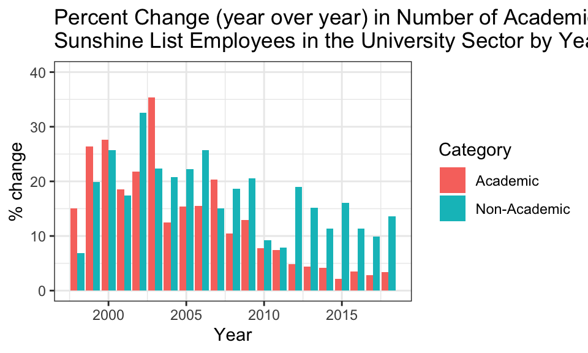
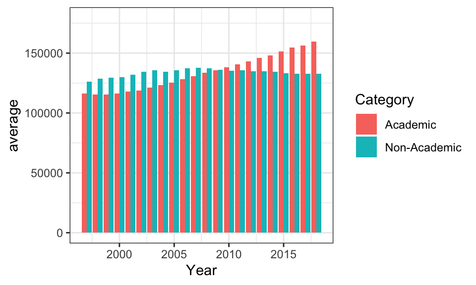

![]()
salaries %>%
mutate(Category=case_when(
#These categorize these job titles into the academic category
str_detect(`Job Title`, 'Professor') ~"Academic",
str_detect(`Job Title`, 'Prof.') ~"Academic",
str_detect(`Job Title`, 'Canada Research Chair') ~"Academic",
str_detect(`Job Title`, 'Lecturer') ~"Academic",
str_detect(`Job Title`, 'Faculty') ~"Academic",
str_detect(`Job Title`, "Librar") ~"Academic",
str_detect(`Job Title`, 'Course Director') ~"Academic",
str_detect(`Job Title`, 'Chair') ~"Academic",
str_detect(`Job Title`, 'Dean') ~"Academic",
str_detect(`Job Title`, 'Principal') ~"Academic",
str_detect(`Job Title`, 'Instructor') ~"Academic",
str_detect(`Job Title`, 'Research Associate') ~"Academic",
str_detect(`Job Title`, 'Department Head')~ "Academic",
str_detect(`Job Title`, 'Research Director')~ "Academic",
str_detect(`Job Title`, 'Research Manager')~ "Academic",
str_detect(`Job Title`, 'Queen\'s National Scholar')~ "Academic",
str_detect(`Job Title`, 'Molecular Biologist')~ "Academic",
str_detect(`Job Title`, 'Senior Researcher')~ "Academic",
str_detect(`Job Title`, 'Contract Academic Staff')~ "Academic",
str_detect(`Job Title`, 'Manager, Analytical Biology')~ "Academic",
str_detect(`Job Title`, 'Director, Sudbury Neutrino')~ "Academic",
str_detect(`Job Title`, 'Director Wilfrid Laurier Press')~ "Academic",
str_detect(`Job Title`, 'Tutor')~ "Academic",
#These are grey area jobs that are likely associated with university teaching hospitals; they are categorized as missing.
str_detect(`Job Title`, 'Psychologist')~ NA_character_,
str_detect(`Job Title`, 'Clinician')~ NA_character_,
str_detect(`Job Title`, 'Clinical Research Coordinator')~ NA_character_,
str_detect(`Job Title`, 'Physician') ~NA_character_,
#If a job title is anything other than the above, it is classed as non-academnic
TRUE ~ "Non-Academic"
)
) %>%
filter(Sector=="Universities")->salaries2Introduction
Alex Usher has a series of recent blog posts here, here, here and here looking at academic versus non-academic expendituers and hiring in Canadian universities.
The basic thrust of Alex’s findings are that while the numbers of non-academic staff are increasing, their overall aggregate salaries are not. His conclusion is that academic salaries continue to rise partially because there is no churn in the academic job market as there is in non-academic jobs. Once you’re a prof, you’re a prof for a long time and your salary basically increases. In increases at faster rates when you are younger to be sure, but it basically increases the entire time.
I wanted to play with the data from the Ontario public sector salary disclosure list (‘’Sunshine List’’) to see if we could learn anything about it.
Background
If you don’t know already the Sunshine List is a dataset published annually by the Government of Ontario. It contains the name, title and salary of each public sector employee (broadly construed) who earned more than $100,00 in any calendar year. It was legislated in 1996 at the height of the Common Sense Revolution. The most generous interpretation of the legislation is that it is a tool for citizens to hold public employees to account. A different interpretation (which I favour) is that it was an attempt to shame, embarass public sector employees and to inflame public opinion as a resource to control public sector salaries.
When the legislation was passed, however, there were no provisions for adjusting the salary level upwards with inflation. That was over 20 years ago and so, inexorably, the sunshine list has gotten larger and larger. You would be shocked at the number of front-line nurses and police officers on that list now.
So, as time passes, the sunshine list will become an increasingly useful data source to track, in a very fine-grained way, salary patterns in Ontario’s public sector. The median salary for full-time university faculty in 2017-2017 was $128,950, meaning that the Ontario sunshine list contains more than half of Ontario full-time professors. Almost inexorably, that will include everyone one day.
I wasn’t able to locate data on the average salary for non-academic staff in Ontario and it is almost certainly lower, but, again, given inflation, it won’t be an insignificant portion of the university workforce. Just remember there are a lot of teachers, nurses and police constables on that list, so university professionals like (well, nurses, engineering technicians in the physical plants, human resource executives, PR people) might plausibly be in the ball park.
And, at the very least, this exercise might be fun.
So, the headline finding from Alex’s numbers are that while universities are hiring more non-academic staff than academic staff, the overall share of the compensation budget for non-academic staff is growing at about the same rate as for academic staff. His two charts here show this:


The first thing we can check is Alex’s finding that academic staff hiring is growing more slowly than non-academic staff. In order to do that, we need to take the myriad job titles in the sunshine list and code them as either academic or non-academic. The code below shows what I’ve done.1
Basically, the lines below take any job title that contains the first string pattern in the line and sets it to be either academic or non-academic. As a rule of thumb, if a job title contained the titles ‘prof’, ‘lecturer’, ‘dean’, ‘chair’, ‘course director’, anything that is really focussed on doing teaching and research, then it got classed as academic. There were some edge cases, that were presumably attached mostly to university teaching hospitals (e.g. clinical psychologist). I set those to be missing, to exclude them. And the rest, I set to be non-academic.
The first thing to do is see how many non-academic and academics are showing up, over time, on the sunshine list.
Is Alex’s pattern that there is greater hiring for non-academic than for academic staff showing up for people earning $100,000? The answer is that it kind of looks like it. this graph shows the percent change over the previous year in the number of people in the non-academic and academic categories earning $100,00 per year in Ontario.

It looks like there was about rough parity in the late 1990s and early 2000s and then non-academic staff have grown more rapidly than academic staff. Now, this doesn’t particularly tell us if this is actually more bodies, it tells us there are increasingly more non-academic people on the sunshin list than academic staff.
But, we can also check whether there are different compensation patterns for non-academic staff and academic staff. Here’s the average salary over time for the two categories.

Now that is a very different pattern. Average non-academic salaries (of people on the sunshine list) were significantly higher than academic faculty in the mid-1990s, but there has been a complete switch since then.
I think this is a super interesting pattern and I wonder if there is kind of a thermostatic reaction going on where senior non-academic and academic staff in universities watch each other and struggle for pay increases. In fact, I wonder if one perverse effect of the sunshine list was to increase academic salaries because they suddenly had very clear access to data on their non-academic counterparts who had a series of good years in the mid- to late-1990s.
I think these data are basically compatible with Alex’ conclusions which is that non-academic hiring has been growing at lower salaries than non-academic hiring. But the only way to square the first graph with the second is that any growth in Ontario in the last 20 years either in the # of non-academic staff or their salaries is constrained to people earning maybe just above the $100,00 salary mark. Otherwise, we would have seen an increase in the average salary of people on the sunshine list; but we haven’t.
For academic staff, though, while the # of people showing up on the sunshine list has been slower (growing presumably because of a combination of inflationary pressures on salaries overall and on some hiring expansion), the average salary above $100,000 has shown absolutely no sign of slowing down. I think this is basically because the academic career path, as currently structured in Ontario, guarantees salary increases at all ranks on the job (early and late).
And I wonder what this will look like going forward. One of the major differences between the non-academic and academic staff sectors (at the high levels) are that the former are not predominantly unionized, while the latter are. The former’s salaries are primarily dictated by market forces; how will that work in a sunshine list environment?
As inflation drives more and more people onto the sunshine list, more and more non-academic unionized employees will be on that list, eliminating that difference. That will take some time, but, barring changes in the legislation, it will happen. Will that make the thermostatic see-saw worse?
Conclusion
Ontario’s public sector salary disclosure list offers a really interesting dataset on public sector salaries, and it’s going to become even more important as inflation drives more and more people onto the list. Second, Alex Usher’s finding that aggregate numbers of non-academic staff are growing at greater rates in the university sector than academic rates is compatible with these data. But we these data don’t tell us if this is because there are increased #s of non-academic people or just more and more people earning over $100,000. However, taking into account the fact that the average of non-academic staff salaries is flatlined with Alex’s finding, it suggests that universities are hiring more and more non-academic people around the $100,00 mark. Third, the average salaries of academic staff earning over $100,000 are are growing at much faster rate than their non-academic colleagues.
Just as a check that my method of selecting job titles into the academic or non-academic category was plausible. Here are the top 30 uniquely occuring job titles in each category.
| Job Title | Category | n |
|---|---|---|
| Associate Professor | Academic | 39944 |
| Professor | Academic | 35672 |
| Assistant Professor | Academic | 9572 |
| Faculty Member | Academic | 7952 |
| Faculty | Academic | 4327 |
| Full Professor | Academic | 3965 |
| Professeur(e) agrégé(e) / Associate Professor | Academic | 2189 |
| Professeur(e) titulaire / Full Professor | Academic | 1969 |
| Lecturer | Academic | 1667 |
| Professor/Professeur | Academic | 1286 |
| Professor of Education | Academic | 1058 |
| Professeur/Professor | Academic | 823 |
| Professeur(e) adjoint(e) / Assistant Professor | Academic | 808 |
| Professeur - Professor | Academic | 692 |
| Instructor | Academic | 642 |
| Senior Lecturer | Academic | 614 |
| Professor of Dentistry | Academic | 556 |
| Professor of English | Academic | 555 |
| Professor of Economics | Academic | 554 |
| Librarian | Academic | 543 |
| Director | Non-Academic | 555 |
| Gestionnaire / Manager | Non-Academic | 253 |
| President | Non-Academic | 253 |
| Directeur(trice) / Director | Non-Academic | 221 |
| Executive Officer | Non-Academic | 180 |
| Registrar | Non-Academic | 139 |
| Directeur(rice) / Director | Non-Academic | 129 |
| Executive Director | Non-Academic | 111 |
| Information Technology Analyst | Non-Academic | 108 |
| Chief Administrative Officer | Non-Academic | 107 |
| Manager | Non-Academic | 105 |
| Chief Information Officer | Non-Academic | 103 |
| Associate Director | Non-Academic | 99 |
| Controller | Non-Academic | 86 |
| University Registrar | Non-Academic | 82 |
| Business Manager | Non-Academic | 78 |
| Counsellor | Non-Academic | 78 |
| Lead Distributed Systems Specialist | Non-Academic | 78 |
| University Secretary | Non-Academic | 78 |
| Directeur(rice) adjoint(e) / Assistant Director | Non-Academic | 76 |